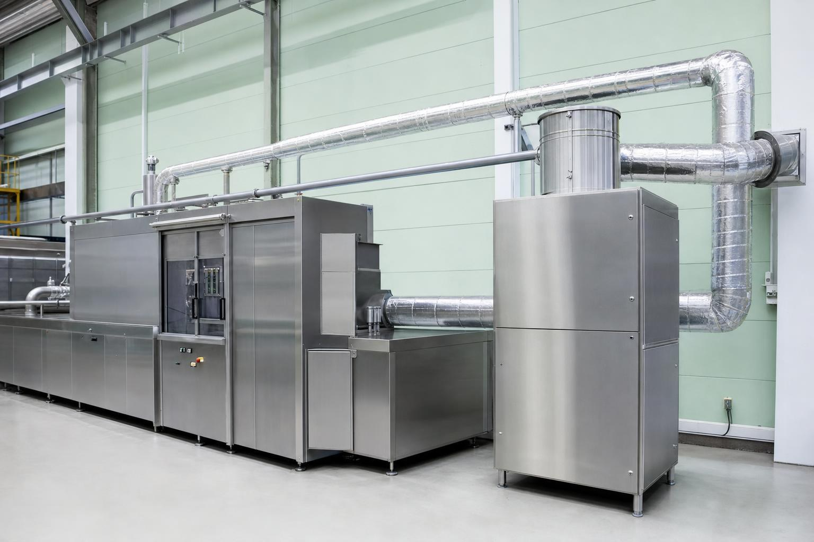
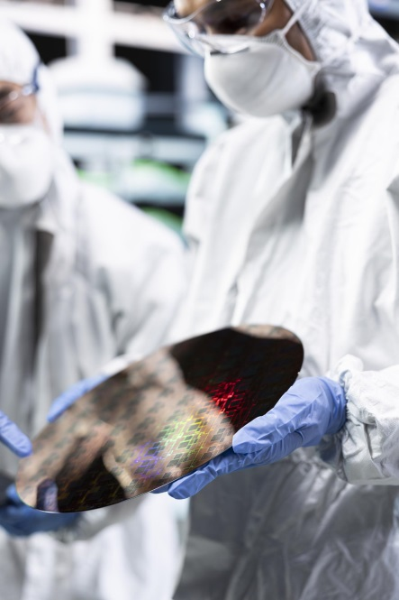

01
SECONDARY BATTERY
2차 전지
캡플레이트, 벤트 등 제품의 특성에 맞게 맞춤 제작하는 세정 시스템
제이에스테크(JS TECH)는 진공 초음파 세정 기술을 기반으로 2차전지 및 정밀 산업 분야의 세정 솔루션을 제공합니다. 오랜 현장 경험과 축적된 기술력을 바탕으로 친환경·고효율 세정 시스템을 설계하며, 세척 공정에서 발생하는 탄화수소 배출을 줄이고 세정제를 회수하는 설비까지 함께 만드는 전문 기업입니다.


제이에스테크는 친환경 진공 초음파 세정기를 전문으로 설계 제작하는 기술 기업입니다. 반도체, 2차전지와 같은 첨단 산업의 까다로운 품질 조건에 만족하는 솔루션을 제공하며 고객의 공정에 최적화된 설비를 제작합니다.
최근에는 세척 공정에서 발생하는 탄화수소(THC) 배출을 줄이는 응축 회수장치를 직접 설계·제작해, 환경 규제 대응과 세정제 절감을 함께 해결하는 분야로 사업을 넓히고 있습니다. 세척기를 만드는 회사가 만들기 때문에, 배기 경로와 세척기 탱크를 하나의 흐름으로 묶을 수 있습니다.
“우리가 만드는 것은 단순한 세정 설비가 아니라, 고객 공정의 마지막 1%를 책임지는 약속입니다.”
챔버를 진공으로 낮춰 액이 좁은 틈까지 들어가게 한 뒤, 초음파로 만든 미세 기포가 표면에서 터지며 잔류 가공유와 미립자를 떼어냅니다.
챔버 압력을 낮춰 세정액이 미세 틈까지 침투
진동자가 만든 미세 기포가 표면에서 붕괴
떨어진 가공유와 미립자를 순환 여과로 배출
진공 건조 후 DYNE·잔류물 기준으로 검사
※ 위 도식은 공정 이해를 돕기 위한 개념도이며, 실제 설비 구성은 고객 공정에 따라 달라집니다.
배출구로 빠져나가던 세정제 증기를 진공으로 끌어와 두 번 응축시켜, 탄화수소 배출을 낮추고 모인 세정제를 세척기로 되돌려 보내는 설비입니다.
진공펌프가 세척기에서 발생한 세정제 증기를 끌어옵니다
1차·2차 열교환기를 거치며 증기가 액체로 바뀝니다
응축된 세정제가 탱크에 모이고 센서가 수위를 감지합니다
펌프로 메인 세척기 더티탱크에 세정제를 되돌려 보냅니다

※ 수치는 자동차 부품 제조 A사 현장의 측정·운전 결과이며, 공정과 가동 조건에 따라 달라질 수 있습니다. 위 도식과 이미지는 이해를 돕기 위한 개념 자료입니다.
반도체부터 자동차·2차전지까지. JS TECH는 각 산업 공정에 최적화된 진공 초음파 세정 시스템과 맞춤형 엔지니어링을 제공합니다.
캡플레이트, 벤트 등 제품의 특성에 맞게 맞춤 제작하는 세정 시스템

청정도가 제품 수율을 좌우하는 반도체 공정 부품 오염 잔류 최소화 세정
가공 후 잔여 가공유 제거 세정 라인(수용성, 비수용성 등 특질에 따른 개별 솔루션 제공)
‘작은 입자 하나’의 차이가 곧 제품의 신뢰가 됩니다. JS TECH는 정밀·신뢰·맞춤·즉응 네 가지 가치를 일관되게 지킵니다.
High Precision
DYNE PEN, MICRON 단위 BURR, 이물까지 제거하는 자체 공정 노하우와 청정도를 유지하는 세정 시스템 제공
Reliable Quality
전 공정 검증 체계와 수많은 납품 경험으로 일관된 품질 보장
Custom Solution
현장, 공정, 양산 조건에 따라 처음부터 설계되는 1:1 맞춤 설비
On-site Response
국내, 해외 무관 생선 우선 즉응 서비스 제공으로 생산 손실 최소화
궁금하신 점이 있다면 아래 연락처로 문의해 주세요.
반갑게 응대해 드리겠습니다.